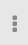

The Data Collector console provides a user interface to configure pipelines, preview data, monitor pipelines, and view a snapshot.
The Data Collector console includes the following general areas and icons:

| No | Name | Description |
|---|---|---|
| 1 | Pipeline canvas | Canvas for configuring a pipeline. |
| 2 | Properties panel / Preview panel / Monitor panel | When you configure a pipeline, the Properties panel displays the properties of the
pipeline or selected stage. When you preview data, the Preview panel displays the input and output data for the selected stage. When you monitor a running pipeline, the Monitor panel displays real-time metrics and statistics.You can resize, minimize and maximize the panel. |
| 3 | Pipeline library | Library of pipelines available to the Data Collector. |
| Toggle Library icon | Icon to display or hide the library. | |
| Add Pipeline icon | Creates a new pipeline. | |
|  | Pipeline Options icon | Allows you to import, export, dupliate, or delete the selected pipeline. |
For information about pipeline configuration options, see Data Collector Console - Edit Mode.
For information about data preview options, see Data Collector Console - Preview Mode.
For information about pipeline monitoring options, see Data Collector Console - Monitor Mode.